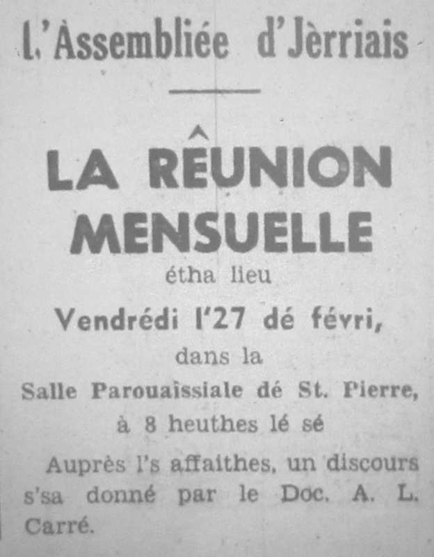

L'Assembliée d'Jèrriais
Discours par lé Dr. A.L. Carré

Dans les huiptante membre lus rêunîtent vendrédi, l'27 dé févri, dans la Salle Pârouaîssiale dé St. Pierre pour la rêunion mensuelle.
D'vant c'menchi, lé Président, l'Sénateu P.J. Romeril, d'mandit ès membres d'lus l'ver et obsèrver eune minute dé silence en mémouaithe du Sieur J. Le Breton et Mme. Priaulx.
Lé rapport du service au mais d'dézembre et l'dîner annuel l'mais d'janvyi fûtent lius et acceptés. Neuf nouvieaux membres fûtent êlus et la correspondance fut liue.
Ch'tait un pliaîsi d'èrvaie la Dlle. F. Hacquoil et la Dlle. L. Picot.

Les affaithes finies, lé Président fit la beinv'nue au Dr. Carré, lé restant d'la séthée étant dans ses mains.
Lé Dr. Carré dit qué ch'tait sa deuxième fais à faithe un discours en Jèrriais et ch'tait tchiquefais difficile à s'exprînmer.
Un discours coumme chenn'chîn est hardi difficile à explyitchi ès siens qui n'étaient pas là.
Les choses ont changi
Lé sujet au Dr. Carré 'tait "Lé Bouan Vier Temps". I' vînt en Jèrri y'a 50 ans, et les choses ont bein changi depis! Les mousses n'avaient pas honte dé pâler lé Jèrriais; y'avait des j'vaux à haler les tchéthues et lé lait et la crème 'taient en grand's quantités en n'y'avait pas l'brit d'avions à compather à à ch't-heu. La mode des habits a changi étout; pas d'aut' dé longs cotillons à traîner amont les d'grés, et y'a pus d'libèrté entre les filles et garçons qué dans san jeune temps.
Auprès aver raconté plusieurs bliuettes en Jèrriais, lé Dr. Carré touônnit à d'tchi un p'tit pus séthieux dans sa langue Française.
La stchulptuthe et l'architectuthe, comme exempl'ye. Dans l's églyises, y'a pus d'méditâtion dans les vielles qué les modèrnes. Les belles peintuthes des grands maître dé la Renaissance; la musique dé Beethoven; la littéthatuthe dé Shakespeare, ses tragédies et conmédies. Les fabl'yes dé Jean de la Fontaine dé y'a 300 ans fûtent r'citées, "Lé labouoreux et ses êfants", "La grenouille aussi grosse qu'un bœuf", etc.
Deux aspects - preunmiéthement lé lien d'affection d'eune famille et l'autorité des pathents sus les jeunes gens. Eune histouaithe fut racontée d'eune méthe qu'allait vaie san fis à l'Hôpita, app'lée "La ballade de Florentin Prunier". La méthe emportit auve yi douze pommes et du beurre dans un p'tit pot, et fut assise vîngt jours et vîngt nyiets à côté du liet; et oulle 'tait bein lâssée et ou dormit pour un p'tit moment et san fis mouothit bein trantchillement sachant qué sa méthe avait 'té auve li.
La vielle gallant'tie
Deuxièmement - l'excès d'libèrté, la vielle gallant'tie Française et les complyîments ès danmes. Lé Dr. Carré nos r'citit un autre poème, "La baiser volé".
En finissant, les membres vîtent coumment qu'les poèmes Français tranduits en Jèrriais perdent lus rînme. Eune exempl'ye, "Le hareng saur", par Charles Cros, fut bein amusant et traduit en Jèrriais coumme "Lé hethan feunmé" par lé Dr. Carré. Les grands applaudiss'ments qu'i' r'chut 'taient bein méthités, et l'Président d'mandit pour aver acouo deux poèmes qui fûtent bein apprêciés par tous - "La cigale et la fourmi" et "Le corbeaux et le renard".
Les membres avaient 'té gardés si întérêssis et amusés pour trais-quarts d'heuthe. Lé Président èrmèrcyit l'Dr. Carré pour chu mangnifique discours, et les raffaîchiss'ments fûtent sèrvis par les danmes dé l'exétchutif.
Annonces
Les announces suivîtent. L'excursion à l'Île dé Witte lé 4 d'août. Les membres întéressis, lus pliaît-i' donner lus noms au Sieur J.N. Richard pas pus tard qué l'15 dé mai, à cause qué n'y'a qu'70 pliaiches.
Lé Président èrmèrcyit lé Connêtabl'ye pour la salle et les danmes pour les raffraîchiss'ments.
Lé Député P.M. de Veulle dit tchiques patholes entouor lé travas qu'Dr. Carré avait fait sus lé Dictionnaithe Jèrriais et comme tchi qu'il avait apprins lé Jèrriais dans un an. Les membres sont bein èrconnaissants à li pour san grand întéthêt.
Jersey Evening Post 3/4/1970
Viyiz étout: